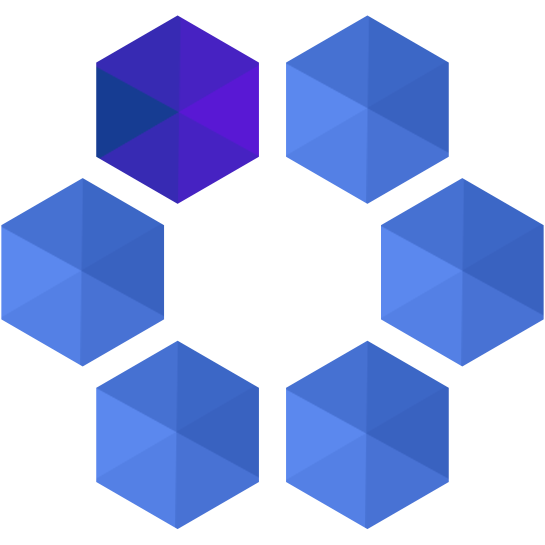

주식회사 아카이브
“일본에서 일하는 외국인 IT 엔지니어를 응원합니다.”
도쿄도 키타 구 아카바네115-0045
3-22-6-102
tel:03-5939-4070
info@archive-asia.co.jp
회사 소개
당사는 일본 IT 업계에서 높은 기술력과 글로벌 감각을 겸비한 IT 엔지니어 여러분들이 다수 활약 할 수있는 환경을 창출하고 엔지니어 여러분과 함께 성장할 수있는 회사가 될 것을 목표로하고 있습니다.
| 설립 | 2006년 10월 10일 |
| 자본금 | 6,000,000円 |
| 임원 |
- 대표 이사 角田 元輝
- 이사 鈴木 隆志
- 이사 李 埈昊
- 이사 李 在殷
- 이사 高 成洙
- 감사 柴崎 秀明（세무사)
|
| 사업내용 | 외국인 IT 엔지니어를 중심으로 한 소프트웨어 개발 |
| 관련 사업 | 및 외국인 IT 엔지니어 지원 사업 |
엔지니어에 대한 대응
- 원하는 직업에 맞는 일
엔지니어가 원하는 경력을 확실히 파악 가능한 경력에 맞는 직업에 종사 할 수 있도록 힘 쓰고 있습니다.
- 팀 체제로 일
동료끼리 상담 등 할 수 있도록 가능한 한 같은 회사의 멤버들과 함께 일할 수있는 체제를 만들고 있습니다.
- 일하는 방법을 선택
엔지니어가 자신의 라이프 스타일에 맞게 다음의 일하는 방식을 선택할 수 있으며, 원칙적으로 1 년에 1 회, 일하는 방식을 변경할 수있는 제도를 마련하고 있습니다.
- 정규직 (무기 고용) 계약 직원 (기간제)
- 프리랜서
- 정규직 또는 계약직과 프리랜서 믹스
※ 일하는 방식의 변화에는 일정한 조건이 필요할 수 있습니다.
- 주거 상담 / 소개가 가능
신뢰 관계를 구축하고있는 부동산 회사와의 제휴를 통해 주거 상담 / 소개를 가능하게하고 있습니다.
- 비자 상담 / 수속 의뢰가 가능
당사는 (공익 재단법인) 입관 협회의 회원이되고, 재류 기간 갱신, 자격 변경, 영주권 신청 등에 대해 전문적인 상담 및 입국 관리국에 각종 신청의 대리를받을 수 있습니다 .
요구 인물상 / 기술 분야 등
우리는 아카이브 스타일이라 칭하고 다음과 같은 생각과 행동이있는 분과 함께 일하고 싶습니다
라고 생각하고 있습니다.
아카이브 스타일
- 긍정적 사고（Positive Thinking）
- 자발적 행동
- 활발한 학습 (기술 교육) 의욕
- 적극적인 커뮤니케이션
- 동료와 함께 성장하는 협력성
- 업무 내용을 달성 할 수있는 압도적 인 스킬
기술 분야
보유 기술 (언어)
- Phone : iOS, Objective-C/Swift, Android, Kotlin/Java
- Web Application : Java, PHP, Ruby on Rails
- AI : Ruby, Python
- ETC : SAP/R3, COBOL
연수
신인 연수
3 개월 동안 업무 내용을 달성 할 수있는 능력, 매너 교육을 실시합니다.
- 본인 희망과 안건 상황에 따라 Moblie, Web Application, AI (Python) 분야 등의 기술을 교육합니다.
- 연수에서 배운 기술을 활용하여 개인 프로젝트의 완성을 목표로하고 있습니다.
- 사내 규칙 (아카이브 스타일)에 따라 필요한 매너를 몸에 익힙니다.
스킬 체인지 연수
IT 업계의 기술 변화는 심한 것으로 알려져 있습니다. 그 변화에 유연하게 대응할 수 있도록 지원합니다.
- 관련 서적, 인터넷 강좌 지원
- 사내 연구회 개최
어학 연수
외국인 IT 엔지니어 분들을 위해, 일본인 및 이중 언어 엔지니어, 일본어 연수를받을 수 있습니다.
복리 후생